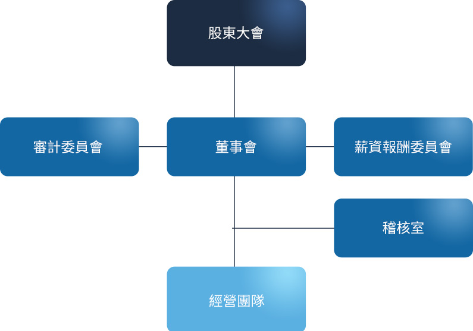

公司治理組織架構

本公司由財會管理處溫玉岑副總經理擔任公司治理人員，保障股東權益並強化董事會職能。溫副總已具備公開發行公司從事財務及股務等管理工作經驗達三年以上。公司治理人員主要職責為提供董事執行業務所需之資料、協助董事遵循法令、依法辦理董事會及股東會會議相關事宜等。
106 年度業務執行情形如下：
- 1.協助獨立董事及一般董事執行職務、提供所需資料並安排董事進修：
- (1)針對公司經營領域以及公司治理相關之最新法令規章修訂發展，定期通知董事會成員。
- (2)檢視相關資訊機密等級並提供董事所需之公司資訊，維持董事和各業務主管溝通、交流順暢。
- (3)獨立董事依照公司治理實務守則，有與內部稽核主管或簽證會計師個別會面瞭解公司財務業務之需要時，協助安排相關會議。
- (4)依照公司產業特性及董事學、經歷背景，協助獨立董事及一般董事擬定年度進修計畫及安排課程。
- 2.協助董事會及股東會議事程序及決議遵法事宜：
- (1)向董事會、獨立董事、審計委員會報告公司之公司治理運作狀況，確認公司股東會及董事召開是否符合相關法律及公司治理守則規範。
- (2)協助且提醒董事於執行業務或做成董事會正式決議時應遵守之法規。
- (3)會後負責檢覈董事會重要決議之重大訊息發布事宜，確保重訊內容之適法性及正確性，以保障投資人交易資訊對等。
- 3.維護投資人關係：視需要安排董事與主要股東、機構投資人或一般股東交流與溝通，使投資人能獲得足夠資訊評估決定企業合理的資本市場價值，並使股東權權益受到良好的維護。
- 4.擬訂董事會議程於七日前通知董事，召集會議並提供會議資料，議題如需利益迴避予以事前提醒，並於會後二十天內完成董事會議事錄，並發送予董事會成員。
- 5.依法辦理股東會日期事前登記、法定期限內製作開會通知、議事手冊及議事錄並於修訂章程或董事改選辦理變更登記事務。